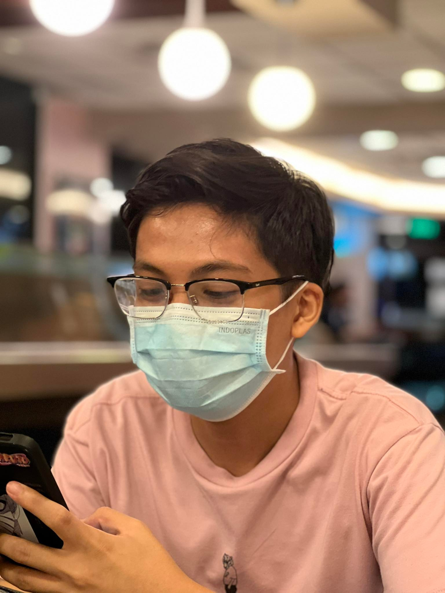

Hello there!
I am Jerico Luis A. Ungos
You can call me Jerico or if you prefer something shorter, Luis.

CMSC 123 is my favorite CMSC subject so far as it had helped me appreciate coding more, especially in a F2F setup, and I became fond of pointers because of that subject.
ETHICS 1 would definitely be my favorite GE so far since it challenged the thought process I had when I was thinking that subject.
I personally think that C is my current favorite language due to last semester's CMSC 123, specifically the pointers and the trees (BST and AVL).
My favorite food is probably barbeque, specifically the "tenga", but I also like burgers and the stereotypical food of this course, Pancit Canton.